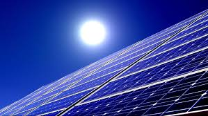

- Energia solară – Spania beneficiază de peste 2.500 de ore de soare pe an, fiind una dintre țările cu cel mai mare potențial fotovoltaic din Europa. Centrala solară Núñez de Balboa din Extremadura, una dintre cele mai mari din UE, alimentează echivalentul a 250.000 de gospodării anual și economisește 215.000 de tone de CO₂.
- Energia eoliană – Cu peste 30 GW capacitate instalată, Spania este al doilea producător european de energie eoliană, după Germania. Regiuni precum Galicia, Castilla y León și Aragón concentrează majoritatea parcurilor eoliene, iar țara dezvoltă activ proiecte de eolian offshore în Insulele Canare.
- Planul PNIEC și hidrogenul verde – Planul Național Integrat de Energie și Climă 2021–2030 prevede investiții de peste 241 miliarde euro pentru a atinge 74% energie regenerabilă în electricitate până în 2030. Spania are una dintre cele mai ambițioase strategii europene pentru hidrogen verde, cu un obiectiv de 11 GW capacitate de electroliză până la sfârșitul deceniului.
